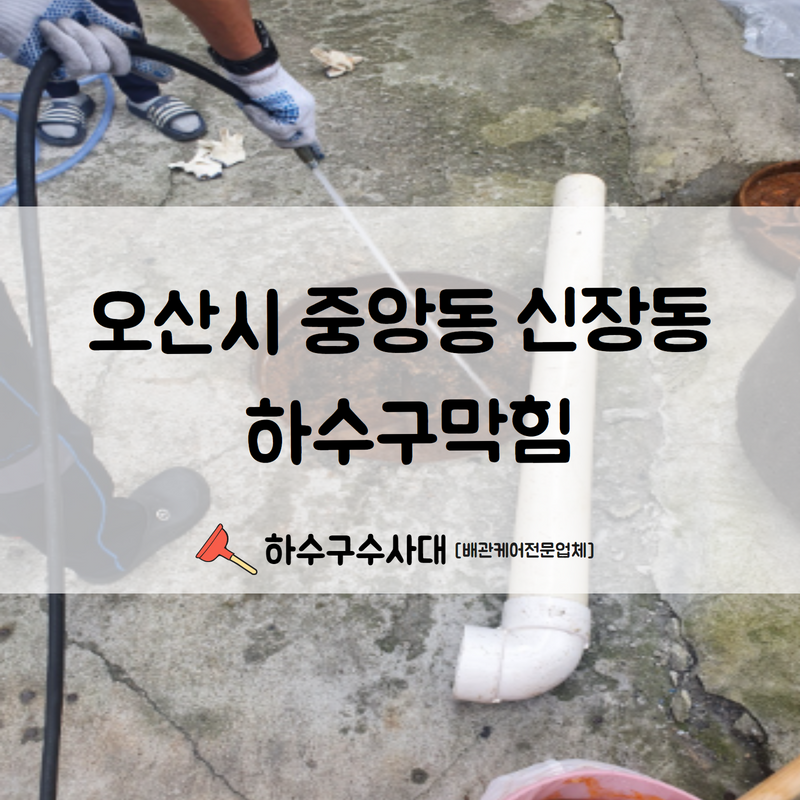
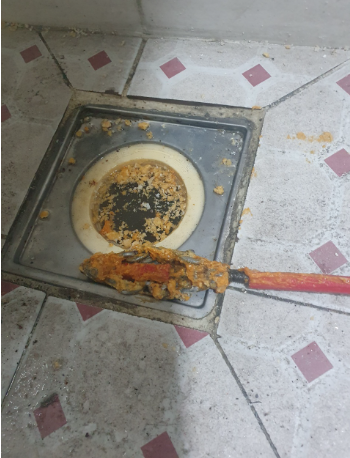
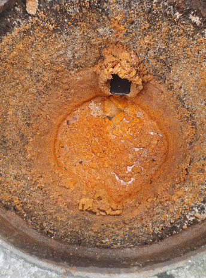
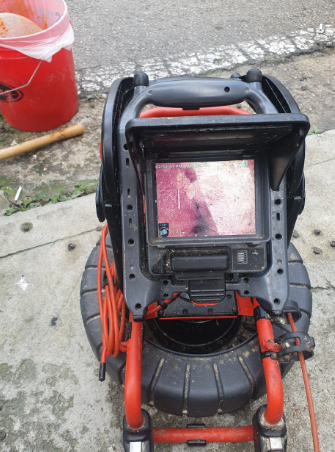
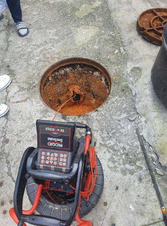
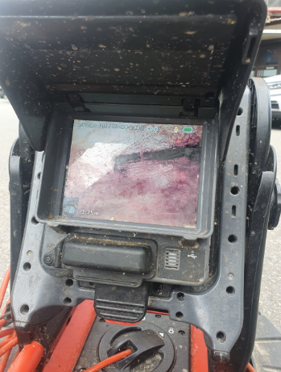
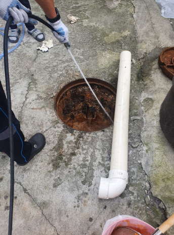

🏠 오산시 중앙동 신장동 하수구막힘 심한 악취 제거와 함께 시공 완료하였습니다!
오산 신장동 싱크대막힘 전문 시공 후기

📋 작업 개요
- 위치: 오산 신장동, 신장동, 오산
- 서비스 유형: 싱크대막힘, 하수구막힘, 배관막힘, 역류해결, 뚫는업체, 고압세척
- 작업 일시: 2022. 7. 23. 22:45
- 업체명: 하수구수사대 (010-5615-2118)
🔍 문제 상황
안녕하세요.하수구수사대 입니다.반갑습니다.
일상생활 속에서 발생하는 이물질, 그리고 기름때 등으로 인하여 발생한 하수구 막힘은 셀프로 해결해 보려고 시도를 해보지만 어려운 경우가 대부분입니다.
오산시 중앙동 신장동 하수구막힘현장을 소개해 드리겠습니다.
큰 이물질이 걸렸거나 미세한 막힘이 있는 경우 유선적으로 뚫어 뻥 또는 배수구를 뚫는 약품으로 해결해볼 수도 있겠지만 셀프로 건드렸다가 더 큰 문제가 발생할 수 있으므로 전문가의 손길로 해결을 해주는 것이 안전합니다.
오늘 의뢰를 주신 오산시 중앙동 신장동 하수구막힘현장은 상가로 운영되고 있다 보니 당연히 많은 손님의 유입이 지속적으로 발생하고 있는 공간이며 해당 건물에서는 전 층에서 잦은 하수구막힘으로 고생을 하셨다고 하셨습니다.

🔎 원인 분석
💡 전문가 진단: 오산시 중앙동 신장동 하수구막힘현장을 소개해 드리겠습니다.
배수가 되지 않아 어려움을 겪고 계셨는데요.
싱크대와 욕실 배수구를 통해 물이 빠르게 배수되질 않으니 일상생활을 하기 불편하셨다고 하며 처음에는 건물이 오래돼서 노후되다 보니 당연히 받아들여야 하는 불편이겠지라고 생각을 하시곤 방치를 해두셨지만 어느 날부터인가 물이 전혀 배수되질 않고 2~3층에 거주하는 가정에서는 역류까지 발생했다고 합니다.
내시경 호스를 배수구 내부로 집어넣어 카메라에 비치는 모습을 보며 확인해 볼 수 있습니다. 일반적으로 외관상 보이는 문제만으로는 하수구막힘을 발생시키는 근본적인 원인을 제거하는 작업을 구상하기에 많은 부족함이 있습니다. 그래서 언제나 내시경 장비를 이용하여 탐지가 이뤄집니다.
배수관 내부의 경우에는
다세대주택 건물에서는 많은 세대가 함께 공동으로 사용하는 메인 배관에서 문제가 자주 발생하곤 합니다. 각각의 세대에서 배수구를 통해서 이물질이 내려가지 않도록 꼼꼼하게 관리를 해주는 것이 중요하겠지만 이 정도쯤은 크게 문제가 되지 않겠지라는 마인드로 배수구로 이물질을 습관적으로 내려보내고 있어 이로 인하여 계속 하수구막힘 현상이 발생하게 됩니다.

🔧 작업 과정
여러 세대가 공동으로 거주하는 공간인 다세대 주택 또는 아파트와 같은 건물에 거주하고 계시다면 모든 세대에서 동일하게 하수구를 통해 이물질이 내려가지 않도록 세심하게 관리해 주는 게 좋습니다.
메인 배관에서 고압세척을 진행하기로 결정하였습니다.
그전에 한 세대에서 유독 심하게 하수구가 막히는 현상이 발생하고 있어 이 부분을 먼저 해결했습니다. 역류된 이물질들이 배수구에 그대로 고여서 지독한 악취를 발생시키고 있었습니다. 해당 배수구는 석션기를 이용해 모든 이물질을 빨아들여 제거해 주었는데요.
각 현장에 발생한 상태에 따라서 작업 환경은 조금씩 달라질 수 있는데요 작업 과정, 비용에 대해서는 고객분들께 자세히 안내해 드리고 있으며 모든 하수구막힘 문제를 해결 후 고객분들께 작업 결과를 설명해 드리고 있습니다.
화장실 배수구는 머리카락이 주 범인인 경우가 다반사입니다.
여러 이물질로 인하여 잦은 막힘이 발생할 수 있는 공간인 만큼 세정 약품을 이용하여 배관에 이물질이 쌓이지 않도록 잘 관리해 주는 것도 좋은 방법이 될 수 있으며 이외에도 우리가 평소에 깊은 관심을 가지고 배수구를 잘 관리해 준다면 하수구 막힘이 발생하지 않고, 쾌적하고 청결한 배수구를 유지할 수 있습니다.
하수구가 막히는 상황을 발생시키던 각종 이물질들을 말끔하게 제거해 주어 더 이상 막히지 않도록 구간들을 전체적으로 확인하여 해결했다는 상황을 상세하게 전달드린 후 가벼운 마름으로 철수하였습니다.
오산시 중앙동 신장동 하수구막힘 현장을 함께 보았습니다.


✅ 작업 완료
궁금하신 사항이나 시공 문의는 첨부된 링크를 이용해 주시길 바랍니다.
경기도 오산시 오산로160번길 15 201-L16호




⚠️ 주방 싱크대 배관 막힘 예방 수칙
- ✅ 기름기가 묻은 식기나 프라이팬은 설거지 전 키친타올로 반드시 기름때를 닦아내세요.
- ✅ 주기적으로 싱크대 개수대에 뜨거운 물을 가득 받아 한 번에 내려 배관 내부 기름을 씻어내세요.
- ✅ 배수구 거름망을 미세한 필터로 사용하시고 음식물 찌꺼기가 틈으로 새어 들지 않게 관리하세요.
- ✅ 베이킹소다와 식초를 뜨거운 물과 함께 일주일에 한 번씩 부어주면 배관 살균과 막힘 예방에 좋습니다.
💡 핵심 정리
- 확실한 장비 작업(내시경 점검 및 샤프트 스케일링)으로 원인을 뿌리 뽑습니다.
- 작업 후 1년 이내에 동일한 부위 재발 시 100% 무상 A/S 서비스를 보장합니다.
- 서울 · 경기 · 인천 전 지역에 24시간 언제든 긴급 출동할 수 있도록 항시 대기 중입니다.
❓ 자주 묻는 질문 (FAQ)
🚨 오산 신장동 싱크대막힘 문제로 고민이신가요?
정확한 원인 진단과 확실한 시공으로 재발 없는 해결을 약속드립니다.
24시간 긴급 출동 | 서울 · 경기 · 인천 전지역 | 1년 내 재발 시 무상 A/S